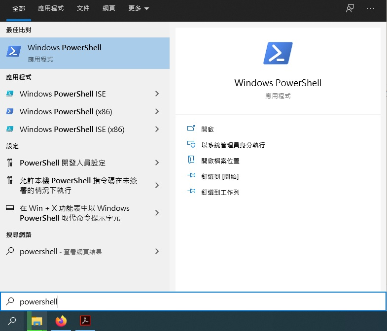
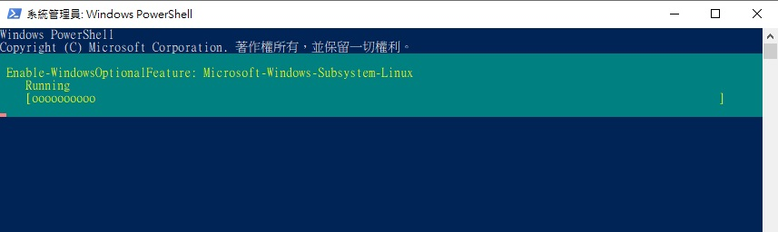
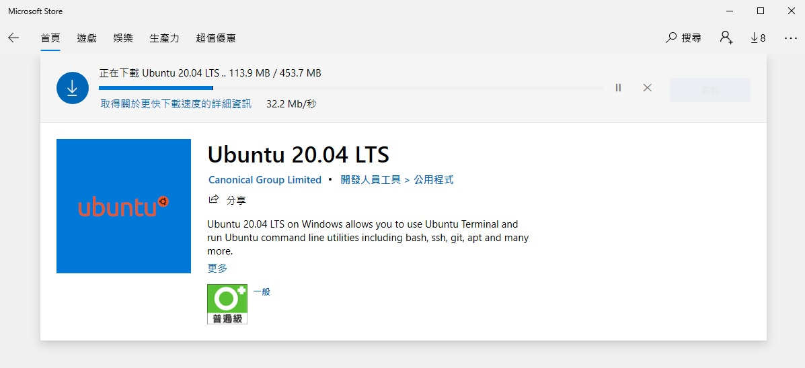

安裝Windows Subsystem Linux（WSL）、Ubuntu
- 首先，在左下角搜尋的地方打上
powershell，然後滑鼠右鍵點它，選擇「以系統管理員身分執行」。

- 在輸入框內輸入
Enable-WindowsOptionalFeature -Online -FeatureName Microsoft-Windows-Subsystem-Linux並按下Enter。

等它Running跑完之後，會跳出「是否要立即重新啟動電腦」的選項，預設是Yes，直接按Enter就會開始重新啟動。
重開機完成後，打開Microsoft Store，搜尋
ubuntu，點進去之後按「安裝」。（這邊可能會跑出需要登入的框框，快速註冊一個Microsoft的帳號即可）

安裝完之後按「啟動」，會打開Ubuntu視窗然後開始跑初始安裝（可能會花一些時間），接著會要創一個帳號和密碼，以後用sudo指令的時候會用到，所以密碼要記好，不要亂打。
輸入完帳號（username）和兩次密碼（password）之後，會看到
Installation successful!，到這邊就完成安裝Ubuntu了！
補充：想要用檔案總管開啟Ubuntu的根目錄
~，可以在檔案總管路徑列輸入\\wsl$就可以找到Ubuntu-版本號，點進去找\home\your_username就是Ubuntu的根目錄~了！
安裝RVM（Ruby Version Manager）
開啟RVM官方網站，複製左邊區塊Install RVM的那欄
\curl -sSL https://get.rvm.io | bash -s stable，貼到Ubuntu裡面去按Enter。這時候會看到一行
gpg: Can't check signature: No public key，只要複製下面的gpg --keyserver hkp://pool.sks...那一整串，然後一樣貼上去Enter。再重複步驟1.，貼上那行後Enter，應該就可以看到
Installing RVM to...還有Thanks for installing RVM，表示RVM安裝完成。
安裝Ruby
將Ubuntu關掉重開，然後輸入
rvm list known可以看到一整排能夠安裝的ruby種類和版本，有[]的應該是代表安裝時可以省略不打。選定好想安裝的版本之後（在此以ruby 2.7.2版為例），輸入
rvm install 2.7，就會開始安裝ruby-2.7.2這個版本了。
| 指定 | 用途 |
|---|---|
rvm install 2.4.1 |
安裝 2.4.1 版的ruby |
rvm uninstall 2.4.1 |
解除安裝 2.4.1 版的ruby |
rvm list |
查看目前已經安裝過的ruby版本 |
rvm -v |
查看目前位置的ruby版本 |
rvm (use) 2.6.6 |
切換到 2.6.6 版的ruby |
rvm 2.7.2 --default |
設定 2.7.2 為預設ruby版本 |
–
到這個步驟就完成在windows安裝WSL Ubuntu、RVM及Ruby，下一篇會介紹推薦安裝的套件。
轉載請註明來源。